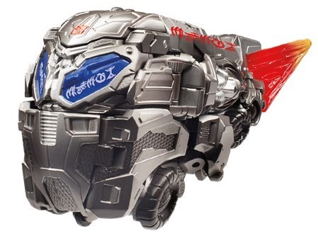
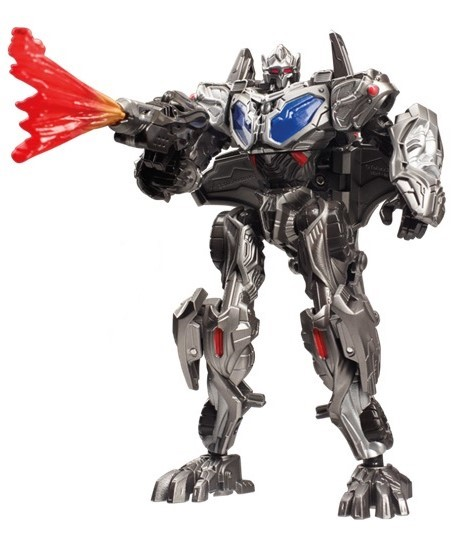
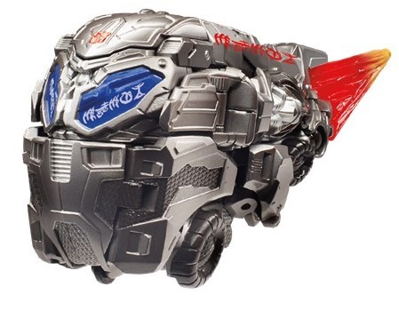
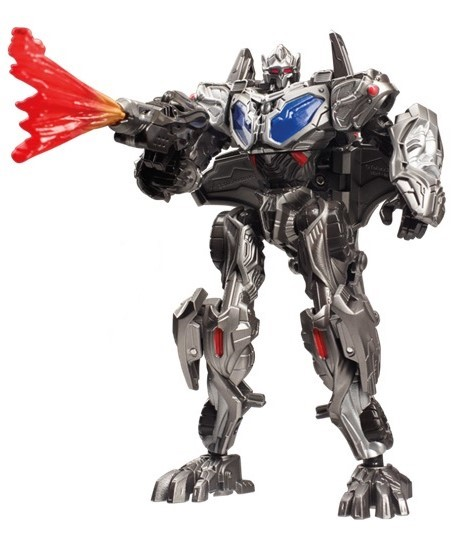
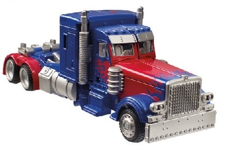
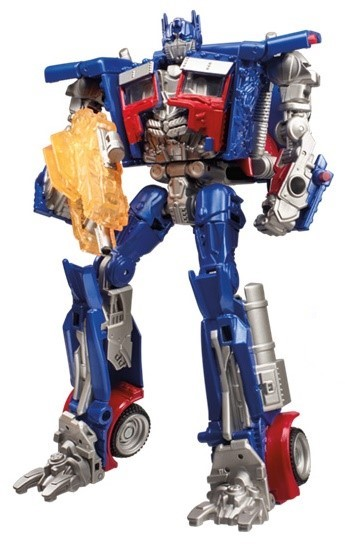

 
Size : Deluxe
Difficulty of Transformation: Medium
Color Scheme : Light milky gray, black, and some light red, dark glossy blue, transparent red, silver, and orange
Individual Rating : 8.5
Allegiances
: Autobot
Set Price
: $40 (U.S.)
Overall Rating
: 8.7
(NOTE: Because this set is composed of repaints,
this is not a full-blown review. This mainly covers any changes made to
the set and the color scheme, and merely compares it to the original versions
of these molds. For a review on TF1 Protoform Optimus Prime-- the mold
used for "Cybertron Optimus Prime"-- go
here
.
For a review on the original DotM deluxe Optimus Prime, go
here
.)
 Cybertron
Optimus Prime
Cybertron
Optimus Prime


Size
: Deluxe
Difficulty of Transformation:
Medium
Color Scheme
: Light milky gray,
black, and some light red, dark glossy blue, transparent red, silver, and
orange
Individual Rating
: 8.5
The most obvious change
to "Cybertron" Optimus Prime in this 2-pack compared to the original is
that the base color of plastic is more of a straightforward light milky
gray, compared to the original which had a bluish tint to it instead. This
does admittedly make more sense for a "Protoform" Optimus-- especially
in light of how he appeared in the first movie-- but from a visual standpoint
I wish they had used a less bland shade of gray for his base plastic (the
official pics are really touched-up, making it look like he's coated in
silver paint-- he most definitely is NOT). Additionally, the "blast effect"
used for his gunbarrel and the back of his "meteor mode" is now a base
of transparent red with some orange spray paint on the narrower end of
it, compared to the gold/orange combo on the original. In fitting with
the "Cyberglyph" gimmick of many of the Toys "R" Us exclusives for TLK,
he's got some Cyberglyph paint apps on him-- enough to be kind of obnoxious,
really. There's HUGE red ones down the upper sides of his meteor mode,
as well as white glyphs on each of his chest-windows. (All spell out PRIME
in Cyberglyphs.) Most of his other paint apps-- both in terms of sizes
and in colors used-- are the same as on the original, though a few have
been changed-- he has a silver mask on the sides of his front "bumper"
in his meteor mode, but the headlight paint apps are missing. He's also
missing the silver spray apps on his feet and the top of his meteor mode,
and his chest window blue paint apps are a bit smaller.
No mold changes have
been made to this version of Optimus Prime.
 Optimus
Prime
Optimus
Prime


Size
: Deluxe
Difficulty of Transformation
: Medium
Color Scheme
: Dark glittery blue,
light gray, moderately dark red, and some gray, silver, clear plastic,
metallic gold, transparent blue, and orangish yellow
Individual Rating
: 8.9
Optimus Prime also, largely,
looks the same as his DotM deluxe release. The most obvious change is his
Mechtech weapon, which is now a transparent orange as opposed to gray;
instead, now the axe weapon ITSELF is gray, in an interesting color reversal.
Additionally, the gold color/gradient has also been removed from the truck
mode entirely. The gray and blue plastic is largely the same (again, the
official pics are airbrushed, he is NOT coated in silver paint as might
appear from the above pics). Some additional parts that were gray on the
original have been re-cast in blue plastic-- like his shoulders and chest
piece, with the latter painted red. The sides of the front of his truck
mode and his upper robot legs are either painted blue or are just kept
cast in blue plastic, and his pelvis is now all gray. The flame tampos
on the sides of his front nose have been altered and extended down the
sides, however. His eyes are now painted blue, though there's still clear
plastic behind them. And of course, he has Cyberglyphics on the left side
of his front hood, which spell out "PRIME" in Cybertronian.
Overall, these are two pretty solid modes, and if you don't have either of them and want some more Prime toys, this is an easily recommended pickup. That said, although the color schemes and paint apps for both certainly aren't bad, the originals were superior, in my opinion-- Protoform Prime didn't have the obnoxious graffiti, and the "normal" Optimus had some nice gold paint apps to lighten things up some. Thus, I'd recommend both of the originals over these versions-- and if you have said originals, there's really no need to pick up this set, as both of these "redecoes" are very similar, outside of a few very minor changes.
Reviews by Beastbot
(Images from Hasbro .)